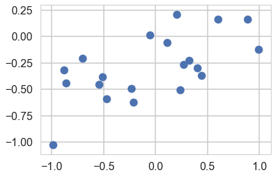
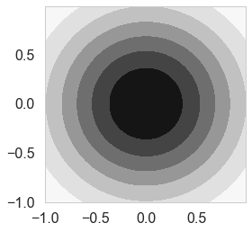
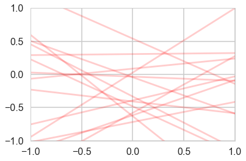
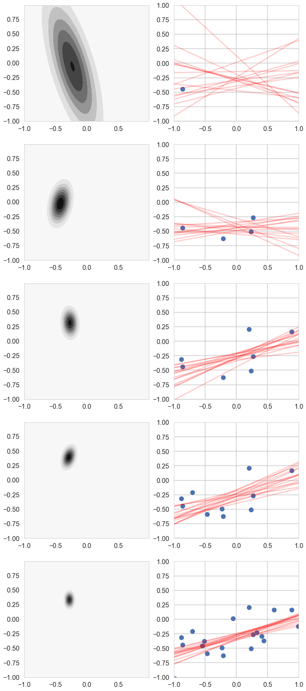
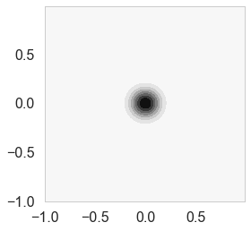
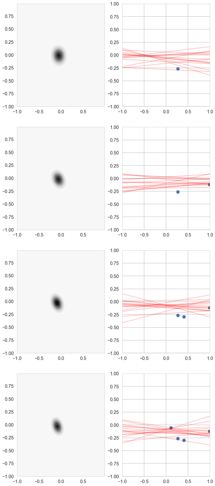

%matplotlib inline
import numpy as np
import scipy as sp
import matplotlib as mpl
import matplotlib.cm as cm
import matplotlib.pyplot as plt
import pandas as pd
pd.set_option('display.width', 500)
pd.set_option('display.max_columns', 100)
pd.set_option('display.notebook_repr_html', True)
import seaborn as sns
sns.set_style("whitegrid")
sns.set_context("poster")Bayesian Regression
Putting priors on regression coefficients and updating with data.
bayesian
regression
models
Formulates linear regression in the Bayesian framework with conjugate normal priors on the coefficients. Derives the posterior distribution over weights, shows how the posterior contracts with more data, and connects MAP estimation to ridge regression.
\[ \renewcommand{\like}{\cal L} \renewcommand{\loglike}{\ell} \renewcommand{\err}{\cal E} \renewcommand{\dat}{\cal D} \renewcommand{\hyp}{\cal H} \renewcommand{\Ex}[2]{E_{#1}[#2]} \renewcommand{\x}{\mathbf x} \renewcommand{\v}[1]{\mathbf #1} \]
from scipy.stats import norm
from scipy.stats import multivariate_normal
def cplot(f, ax=None):
if not ax:
plt.figure(figsize=(4,4))
ax=plt.gca()
xx,yy=np.mgrid[-1:1:.01,-1:1:.01]
pos = np.empty(xx.shape + (2,))
pos[:, :, 0] = xx
pos[:, :, 1] = yy
ax.contourf(xx, yy, f(pos))
#data = [x, y]
return ax
def plotSampleLines(mu, sigma, numberOfLines, dataPoints=None, ax=None):
#Plot the specified number of lines of the form y = w0 + w1*x in [-1,1]x[-1,1] by
# drawing w0, w1 from a bivariate normal distribution with specified values
# for mu = mean and sigma = covariance Matrix. Also plot the data points as
# blue circles.
#print "datap",dataPoints
if not ax:
plt.figure()
ax=plt.gca()
for i in range(numberOfLines):
w = np.random.multivariate_normal(mu,sigma)
func = lambda x: w[0] + w[1]*x
xx=np.array([-1,1])
ax.plot(xx,func(xx),'r', alpha=0.2)
if dataPoints:
ax.scatter(dataPoints[0],dataPoints[1])
ax.set_xlim([-1,1])
ax.set_ylim([-1,1])The Bayesian formulation of regression
Let us say we have data \(D\), of \(n\) observations
$D={ ({}_1, y_1), ({}_2,y_2), , ({}_n, y_n) } $ where \({\bf x}\) denotes an input vector of dimension \(D\) and \(y\) denotes a scalar output (dependent variable). All data points are combined into a \(D \times n\) matrix \(X\). The model that determines the relationship between inputs and output is given by
\[ y = \bf x^{T} {\bf w} + \epsilon \]
where \({\bf w}\) is a vector of parameters of the linear model. Usually there is a bias or offset is included, but for now we ignore it.
We assume that the additive noise \(\epsilon\) is iid Gaussian with zero mean and variance \(\sigma_n^2\)
\[ \epsilon \sim N(0, \sigma^2_n) \]
a0=-0.3
a1=0.5
N=20
noiseSD=0.2
u=np.random.rand(20)
x=2.*u -1.
def randnms(mu, sigma, n):
return sigma*np.random.randn(n) + mu
y=a0+a1*x+randnms(0.,noiseSD,N)
plt.scatter(x,y)
Likelihood
The likelihood is, because we assume independency, the product
\[ \begin{eqnarray} \like &=& p(\bf y|X,\bf w) = \prod_{i=1}^{n} p(y_i|\bf X_i, \bf w) = \prod_{i=1}^{n} \frac{1}{\sqrt{2\pi}\sigma_n} \exp{ \left( -\frac{(y_i-\bf X_i^T \bf w)^2}{2\sigma_n^2} \right)} \nonumber \\ &\propto & \exp{\left( -\frac{| \bf y-X^T \bf w|^2 }{2\sigma_n^2} \right)} \propto N(X^T \bf w, \sigma_n^2 I) \end{eqnarray} \]
where \(|x|\) denotes the Euclidean length of vector \(\bf x\).
likelihoodSD = noiseSD # Assume the likelihood precision is known.
likelihoodPrecision = 1./(likelihoodSD*likelihoodSD)Prior
In the Bayesian framework inference we need to specify a prior over the parameters that expresses our belief about the parameters before we take any measurements. A wise choice is a \({\bf w_0}\) mean Gaussian with covariance matrix \(\Sigma\)
\[ \bf w \sim N(w_0, \Sigma) \]
If we assume that \(\Sigma\) is a diagonal covariance matrix then
\[\bf w \sim N(w_0, \tau^2 \bf I)\]
priorMean = np.zeros(2)
priorPrecision=2.0
prior_covariance = lambda alpha: alpha*np.eye(2)#Covariance Matrix
priorCovariance = prior_covariance(1/priorPrecision )
priorPDF = lambda w: multivariate_normal.pdf(w,mean=priorMean,cov=priorCovariance)
priorPDF([1,2])0.0021447551423913074cplot(priorPDF);
plotSampleLines(priorMean,priorCovariance,15)
Posterior
We can now continue with the standard Bayesian formalism
\[ \begin{eqnarray} p(\bf w| \bf y,X) &\propto& p(\bf y | X, \bf w) \, p(\bf w) \nonumber \\ &\propto& \exp{ \left(- \frac{1}{2 \sigma_n^2}(\bf y-X^T \bf w)^T(\bf y - X^T \bf w) \right)} \exp{\left( -\frac{1}{2} \bf w^T \Sigma^{-1} \bf w \right)} \nonumber \\ \end{eqnarray} \]
In the next step we `complete the square’ and obtain
\[\begin{equation} p(\bf w| \bf y,X) \propto \exp \left( -\frac{1}{2} (\bf w - \bar{\bf w})^T (\frac{1}{\sigma_n^2} X X^T + \Sigma^{-1})(\bf w - \bar{\bf w} ) \right) \end{equation}\]
This is a Gaussian with inverse-covariance
\[A= \sigma_n^{-2}XX^T +\Sigma^{-1}\]
where the new mean is
\[\bar{\bf w} = A^{-1}\Sigma^{-1}{\bf w_0} + \sigma_n^{-2}( A^{-1} X^T \bf y )\]
To make predictions for a test case we average over all possible parameter predictive distribution values, weighted by their posterior probability. This is in contrast to non Bayesian schemes, where a single parameter is typically chosen by some criterion.
# Given the mean = priorMu and covarianceMatrix = priorSigma of a prior
# Gaussian distribution over regression parameters; observed data, x
# and y; and the likelihood precision, generate the posterior
# distribution, postW via Bayesian updating and return the updated values
# for mu and sigma. xtrain is a design matrix whose first column is the all
# ones vector.
def update(x,y,likelihoodPrecision,priorMu,priorCovariance):
postCovInv = np.linalg.inv(priorCovariance) + likelihoodPrecision*np.outer(x.T,x)
#The outer product looks wrong but when updating we need a 2x1 matrix while x is 1x2
postCovariance = np.linalg.inv(postCovInv)
postMu = np.dot(np.dot(postCovariance,np.linalg.inv(priorCovariance)),priorMu) + likelihoodPrecision*np.dot(postCovariance,np.outer(x.T,y)).flatten()
postW = lambda w: multivariate_normal.pdf(w,postMu,postCovariance)
return postW, postMu, postCovariance# For each iteration plot the
# posterior over the first i data points and sample lines whose
# parameters are drawn from the corresponding posterior.
fig, axes=plt.subplots(figsize=(12,30), nrows=5, ncols=2);
mu = priorMean
cov = priorCovariance
muhash={}
covhash={}
k=0
for i in [1,2,3,4,5,6,7,8,9,10,11,12,13,14,15,16,17,18,19]:
postW,mu,cov = update(np.array([1,x[i]]),y[i],likelihoodPrecision,mu,cov)
muhash[i]=mu
covhash[i]=cov
if i in [1,4,7,10,19]:
cplot(postW, axes[k][0])
plotSampleLines(muhash[i],covhash[i],15, (x[0:i],y[0:i]), axes[k][1])
k=k+1
Posterior Predictive Distribution
Thus the predictive distribution at some \(x^{*}\) is given by averaging the output of all possible linear models w.r.t. the posterior
\[ \begin{eqnarray} p(y^{*} | x^{*}, {\bf x,y}) &=& \int p({\bf y}^{*}| {\bf x}^{*}, {\bf w} ) p(\bf w| X, y)dw \nonumber \\ &=& {\cal N} \left(y \vert \bar{\bf w}^{T}x^{*}, \sigma_n^2 + x^{*^T}A^{-1}x^{*} \right), \end{eqnarray} \]
which is again Gaussian, with a mean given by the posterior mean multiplied by the test input and the variance is a quadratic form of the test input with the posterior covariance matrix, showing that the predictive uncertainties grow with the magnitude of the test input, as one would expect for a linear model.
Regularization
\(\alpha = \sigma_n^2/\tau^2\) (prior precision/likelihood precision) is the regularization parameter from ridge regression. An uninformative (tending to uniform) prior means no regularization which is the standard MLE result.
priorPrecision/likelihoodPrecision0.08000000000000002But now say you had a strong belief the both the slope and intercept ought to be 0. Or in other words you are trying to restrict your parameters to a certain range.
priorPrecision=100.0
priorCovariance = prior_covariance(1/priorPrecision )
priorPDF = lambda w: multivariate_normal.pdf(w,mean=priorMean,cov=priorCovariance)
cplot(priorPDF)
priorPrecision/likelihoodPrecision4.000000000000001choices=np.random.choice([1,2,3,4,5,6,7,8,9,10,11,12,13,14,15,16,17,18,19],4,replace=False)choicesarray([ 1, 18, 13, 19])
# For each iteration plot the
# posterior over the first i data points and sample lines whose
# parameters are drawn from the corresponding posterior.
fig, axes=plt.subplots(figsize=(12,30), nrows=4, ncols=2);
mu = priorMean
cov = priorCovariance
muhash={}
covhash={}
k=0
xnew=x[choices]
ynew=y[choices]
for j,i in enumerate(choices):
postW,mu,cov = update(np.array([1,xnew[j]]),ynew[j],likelihoodPrecision,mu,cov)
muhash[i]=mu
covhash[i]=cov
cplot(postW, axes[k][0])
plotSampleLines(muhash[i],covhash[i],15, (xnew[:j+1],ynew[:j+1]), axes[k][1])
k=k+1

Notice how our prior tries to keep things as flat as possible!